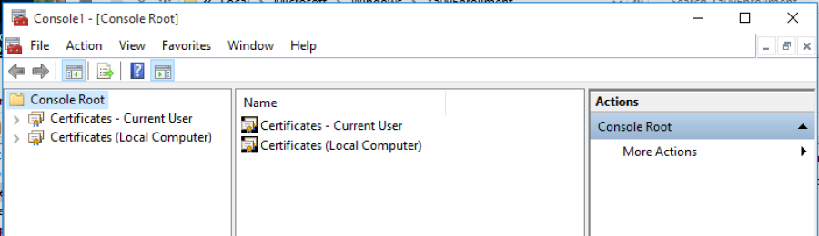

Part 2: MS Certification Authority and Group Policies
The following sections cover how to install and configure the Microsoft Certification Authority and Group Policies:
The examples below use the following denotations:
The domain used is yourcompany.com (YOURCOMPANY).
The Certificate Services hostname is csserver.yourcompany.com.
The Tomcat server hostname is tomcatserver.yourcompany.com.
Labels indicated in bold should be replaced with the names of your environment and in the examples below, the text enclosed in angle brackets should be replaced with names in your environment.
Step 1 - Install Active Directory Certificate Services
The following covers instructions for how to install and configure Active Directory (AD) Certificate Services.
Install Active Directory Certificate Services
To install Active Directory Certificate Services:
Assign a static IP address for this host.
Give the host an appropriate computer name (<csserver>).
Add the host member of the domain (yourcompany.com) using an account that belongs to the Domain/Enterprise Admin group.
Open the Server Manager.
Click Add roles and features.
Click Next.
Select Role-based or feature-based installation and click Next.
Select Select a server from the server pool, select this server, and then click Next.
Select Active Directory Certificate Services.
When prompted to add required features, click Add Features.
Proceed until reaching the Role Services page.
Select Certification Authority and Certification Authority Web Enrollment.
In the appearing popup panel, click Add Features to add IIS and its corresponding features.
Proceed until the Confirmation page and click Install.
When the installation completes, click Close.
Configure Active Directory Certificate Services
To configure Active Directory Certificate Services:
Click the new task shown in the Server Manager notifications: Configure Active Directory Certificate Services on the destination server.
In the shown credentials panel, click Change.
Enter an account that belongs to the Domain/Enterprise Admin group, click OK, and then click Next.
Select role services to configure Certification Authority and Certification Authority Web Enrollment, and then click Next.
Select Enterprise CA, and click Next.
Select Root CA, and click Next.
Select Create a new private key and click Next.
Set the Cryptography provider to RSA#Microsoft Software Key Storage Provider.
Set the Key Length to 4096 bits.
Set the hash algorithm to SHA256 and click Next.
Enter a unique name for the CA such as <MSCA-Proxy> and then click Next.
Set the validity period 25 years.
Configure the location for the certificate database and certificate database logs.
Click Next, then click Configure, and then click Close.
Step 2 - Configure Active Directory Certificate Enrollment Policy Services
To configure the Active Directory Certificate Enrollment Policy Services on the Certificate Services Server, first create and prepare the Service Account and then install the Certificate Enrollment Services according to the instructions below.
Prepare Service Account
To prepare the Service Account:
If not done yet, create the service account (<ces-service>) for Certificate Enrollment Services and the service account (<servlet-service>) for the Tomcat servlet on AD Domain Services Server
 Use the single service account if performing this installation with a single service account on a single host.
Use the single service account if performing this installation with a single service account on a single host.
Open the Local Users and Group manager (lusrmgr.msc).
Navigate to Groups.
Right-click the IIS_IUSRS group and select Properties.
Click Add and enter the object name <YOURCOMPANY\ces-service>.
Click OK and enter an account that belongs to the Domain/Enterprise Admin group, then click OK.
Open the Command Prompt with Admin permissions.
Set the service principal name for the service account by running the following commands as admin and ensure to replace the server <FQDN> and account names with your own configuration.
setspn -s HTTP/csserver.yourcompany.com ces-servicesetspn -s HTTP/tomcatserver.yourcompany.com servlet-service
If using a single service account and performing this installation on a single host (the csserver host), ensure to only run the setspn command once.
Install Certificate Enrollment Services
To install the Certificate Enrollment Services:
Open the Server Manager.
Click Add roles and features and click Next.
Select Role-based or feature-based installation and click Next.
Select Select a server from the server pool, select this server and click Next.
Expand the Active Directory Certificate Services, select Certificate Enrollment Web Service and Certificate Enrollment Policy Web Service and then click Next.
Proceed until the Confirmation page and click Install.
Reboot the server after the roles have been installed.
Step 3 - Configure Certificate Templates
Follow the instructions in the following sections to configure Certificate Templates and Certificate Enrollment Services, and issue a Server Certificate to the CS server.
Configure Certificate Templates
To configure Certificate Templates:
Open the Certificate Authority Manager (certsrv.msc).
Expand the selection for your CA.
Right-click Certificate Templates and click Manage.
Ignore the create the object identifier list warning and click OK, and then click Refresh.
Right-click the Computer template, select Duplicate Template and specify the following:
Under Compatibility Settings, specify Certification Authority=Windows Server 2003 and Certificate recipient=Windows XP/Server 2003.
Click the General tab, and change the Template display name to Computer_Auto_Enrollment.
Click the Security tab, and give "Domain Computers" permissions to Enroll and Autoenroll.
Select the Subject Name tab, and change the Subject name format to DNS Name.
Select DNS Name in the subject alternative name.
Under the Request Handling tab, clear Allow private key to be exported.
Click OK to go back to the template list.
Right-click the User template and select Duplicate Template and specify the following:
Under Compatibility Settings, specify Certification Authority=Windows Server 2003 and Certificate recipient=Windows XP/Server 2003.
Click the General tab, and change the Template display name to User_Auto_Enrollment.
If the requirement is to Publish the User certificate in Active Directory and Credential Roaming is enabled, ensure to s
elect both Publish certificate in Active Directory and
Do not automatically re-enroll if a duplicate certificate exists in Active Directory.
Select the Security tab, and give "Domain Users" permissions to Enroll and Autoenroll.
Select the Subject Name tab, and change the Subject name format to Common name.
Clear Include email name in subject name and clear Email name in the subject alternative name.
Select User principal name (UPN).
Under the Request Handling tab, clear Allow private key to be exported.
Click OK to go back to the template list and then c lose the Certificate Templates Console window.
Return to the Certificate Authority manager, r ight-click Certificate Templates, specify the following and then click OK:
Select New > Certificate Template to Issue.
Select Computer_Auto_Enrollment and User_Auto_Enrollment.
Delete all templates in the Certificate Templates section except for the 2 templates Computer_Auto_Enrollment and User_Auto_Enrollment.
To obtain the Microsoft certificate template OIDs:
Open Powershell and run the following command to get the Certificate Template OID:
Certutil -catemplates -v | select-string displayname,msPKI-Cert-Template-OIDEnsure to note the OIDs for the Computer_Auto_Enrollment and User_Auto_Enrollment templates since you will use these values late r.
Configure Certificate Enrollment Services
To configure Certificate Enrollment Services:
Click the new task shown in the Server Manager notifications: Configure Active Directory Certificate Services on the destination server.
In the credentials panel shown, click Change.
Enter an account that belongs to the Domain/Enterprise Admin group, click OK and then click Next.
Select Certificate Enrollment Web Service and Certificate Enrollment Policy Web Service and click Next.
Select the CA Name.
Click Select and select the Microsoft CA that will be issuing the certificates using certificate enrollment web service, click OK and then click Next.
For CES authentication type, select Windows Integrated Authentication and then click Next.
For CES service account, select Specify service account and then click Select.
Specify the service account <ces-service> and credentials and ensure to use the single service account created if using a single service account.
Click OK and then click Next.
For CEP authentication type, select Windows Integrated Authentication and then click Next.
For Certificate authentication, select Choose and assign a certificate for SSL later and click Next.
Review the confirmation page and click Configure.
When the installation completes, click Close.
Issue Server Certificate to CS Server
To issue a Server Certificate to the CS server:
Open Microsoft Management Console (mmc.exe).
Add the Certificates snap-in.
Choose Computer account, select Local Computer and then click OK.
Navigate to Certificate (Local Computer) and select Personal.
Right-click and select All Tasks > Request New Certificate and click Next.
Select Active Directory Enrollment Policy and click Next.
Select Computer and Enroll, click Next, and then click Finish.
Step 4 - Configure IIS
To configure the Internet Information Services (IIS), do the following:
Open the Internet Information Services (IIS) Manager (InetMgr.exe)
Click your server name on the left-hand side
Expand the selection for your server and click Application Pools
Right-click WSEnrollmentPolicyServer, and select Advanced Settings.
Edit Identity.
In the appearing panel, select Custom account and click Set.
Enter the username and credentials for <yourcompany\ces-service>. If using a single service account, ensure to use the single service account created.
Click OK and expand Sites in the Connection menu on the left-hand side.
Click Default Web Site and then click Bindings on the right-hand side.
Edit the https site binding.
From SSL certificate, select the CS Server's SSL certificate csserver.yourcompany.com, click OK and then click Close.
Expand the Default Web Site option on the left-hand side.
Click ADPolicyProvider_CEP_Kerberos and open Application Settings.
Edit the entry name FriendlyName and set the value to EJBCA_Enrollment. This is a name that clients will see only when manually requesting certificates.
Click Add and create a new entry with the name RetryIntervalMs and value 300000.
Restart IIS by clicking on the server name and then click Restart on the right-hand side.
Step 5 - Configure Group Policies on AD server
Configure Group Policies on the AD server according to the following:
Access Group Policy Management (gpmc.msc) on the AD Domain Services server.
Expand your domain forest => Domains => your domain name => and select Default Domain Policy.
Right-click Default Domain Policy and select Edit.
Expand Computer Configuration and select Policies > Windows Settings > Security Settings > Public Key Policies.
Edit Certificate Services Client – Auto-Enrollment according to the following and then click OK.
Change Configuration Model to Enabled.
Select Update certificates that use certificate templates.
Expand User Configuration > Policies > Windows Settings > Security Settings > Public Key Policies.
Edit Certificate Services Client – Auto-Enrollment according to the following and then click OK.
Change Configuration Model to Enabled.
Select Update certificates that use certificate templates.
Optional: If you require to Publish the User certificates in Active Directory and maintain the same User certificate across all domain-joined workstations, perform the following steps. If not, a user that logs on to multiple workstations will be issued a certificate for each workstation profile by design.
Expand User Configuration > Policies > Windows Settings > Security Settings > Public Key Policies.
Edit Certificate Services Client – Credential Roaming:
Click the General tab, change to Enabled, and click OK.
In the message about Roaming Uses Profile exclusion list displayed, acknowledge and click OK.
Step 6 - Test Microsoft Auto Enrollment
To test the Microsoft Auto Enrollment:
Add the Windows Client host member of the domain (yourcompany.com).
Log in as user member of the Domain Admins group.
Open the Microsoft Management Console (mmc.exe).
Click File>Add/Remove Snap-in and select certificates for both user and local computer .

Verify that the user certificate was generated (Current User/ Personal/ Certificates).
Ensure that the user certificate in the personal store is generated by the Windows CA using your duplicated template.Verify that the computer certificate was generated. (Local Computer/ Personal/ Certificates requires Admin privileges to check the local computer certificate store).
Ensure that the computer certificate in the personal store is generated by the Windows CA using your duplicated template.
Step 7 - Update MS Auto Enrollment Server URL
To update the MS Auto Enrollment Server URL:
Open a command prompt on the Certificate Services Server <csserver>.
Run the following command as user to get the current URL, and ensure to replace the server <FQDN> and <MSCACN> names with your own configuration:
certutil -config csserver.yourcompany.com\MSCA-Proxy -enrollmentserverurlRun the following command as user to remove the existing enrollment server URL, and ensure to replace the server <FQDN> and <Enrollment Server URL>with your own configuration:
certutil -config csserver.yourcompany.com\MSCA-Proxy -enrollmentserverurl https://csserver.yourcompany.com/MSCA-Proxy_CES_Kerberos/service.svc/CES deleteRun the following command as user to add the new enrollment server URL, and ensure to replace the server <FQDN> and <Enrollment Server URL> with your own configuration:
certutil -config csserver.yourcompany.com\MSCA-Proxy -enrollmentserverurl https://tomcatserver.yourcompany.com:8443/autoenroll/MSEnrollmentServlet KerberosTo confirm, run the first command again to show the new updated URL.
Step 8 - Update Group Policy for Certificate Enrollment
T o update the Group Policy for Certificate Enrollment, do the following:
Access Group Policy Management (gpmc.msc) on the AD Domain Services server.
Expand your domain forest > Domains > your domain name, and then select Default Domain Policy
Right-click Default Domain Policy and select Edit.
Expand Computer Configuration > Policies > Windows Settings > Security Settings > Public Key Policies.
Edit Certificate Services Client – Certificate Enrollment Policy.
Change Configuration Model to Enabled.
Remove the Active Directory Enrollment Policy from the Certificate Enrollment policy list, and then click Add.
Enter the policy server URI: https://<csserver.yourcompany.com>/ADPolicyProvider_CEP_Kerberos/service.svc/CEP, click Validate Server, and then click Add.
Select Default, and then click Add.
Expand User Configuration > Policies > Windows Settings > Security Settings > Public Key Policies.
Edit Certificate Services Client – Certificate Enrollment Policy.
Change Configuration Model to Enabled.
Remove the Active Directory Enrollment Policy from the Certificate Enrollment policy list, and then click Add.
Enter the policy server URI https://<csserver.yourcompany.com>/ADPolicyProvider_CEP_Kerberos/service.svc/CEP, click Validate Server and then click Add.
Select Default, and then click OK.